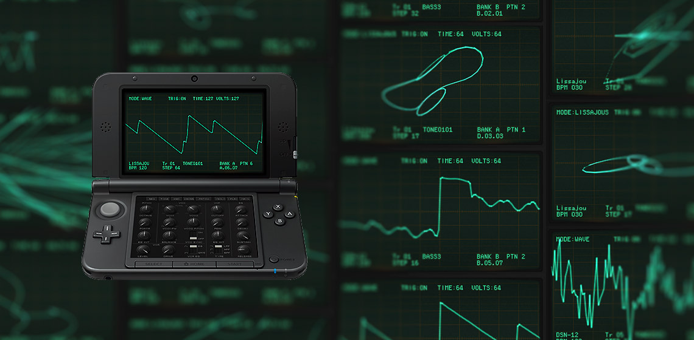

Korg DSN-12 (2014)
An analogue-style 12-part synth and sequencer for the Nintendo 3DS — collaboration between KORG and DETUNE.

Overview
Announced in 2014 and developed by DETUNE with synth design by KORG, DSN-12 is a 12-part analogue-style synthesizer and sequencer for the 3DS eShop. It emphasizes hands-on sequencing, twelve channels, and flexible sound design. :contentReference[oaicite:13]{index=13}
Key features
- 12 number channels (multi-timbral) and step-sequencing
- Analogue-style oscillators, filters and modulation options
- Designed for pattern/sequencer-based composition and performance
Reception & notes
Reviews praised DSN-12 for its deep sequencing tools and intuitive workflow for building tracks on the 3DS. Its 12 channels give it greater arrangement flexibility than previous DS-era synth apps. :contentReference[oaicite:14]{index=14}
Practical tips
- Use tracks to layer sonic parts—12 channels permit fuller arrangements.
- Explore the sequencer’s step editing and parameter automation for more complex patterns.
Official link
Korg product page (DSN-12). :contentReference[oaicite:15]{index=15}